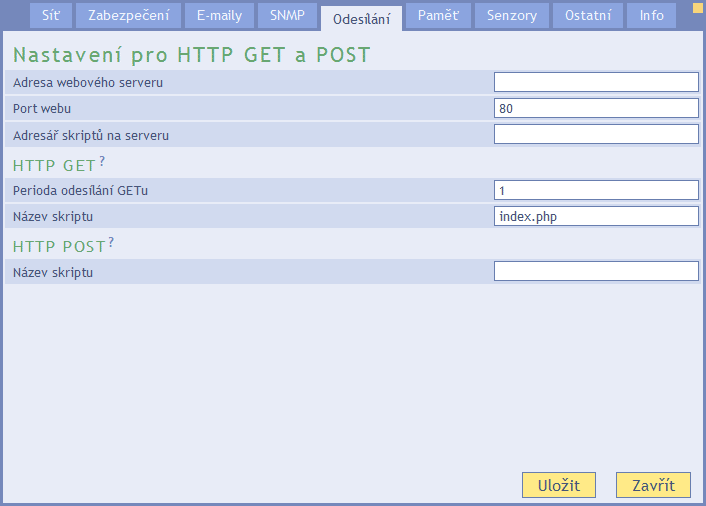
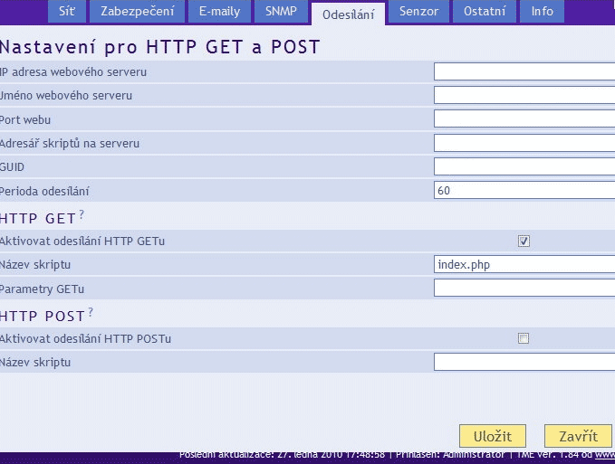
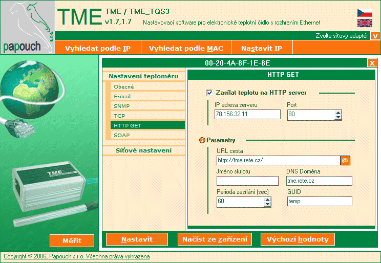

TMEP v8
application for a nice view of TME/TH2E output using HTTP GET method
Authors:
Michal "MultiTricker" Ševčík, multi@tricker.cz, http://multi.tricker.cz,
František "EFES" Ševčík, f.sevcik@seznam.cz
Sponsor:
Papouch - http://www.papouch.com, manufacturer of these great devices
TOC
- Introduction
- Installation
- Update to v8
- Changelog
Dear users,
what you have downloaded is a small web application written in PHP, which uses
database (typically MySQL) and class JpGraph or Open flash chart for generating
graphs. It can nicely show ip some useful statistics from your ethernet
thermometer/hydrometer.
How it works? Your TME with access to Internet (or local network) sends actual
measurement to PHP script. Script writes this measurement into database for
future data generating.
For new versions and future informations, please check out
my blog or Papouch website and if
you need some help or just want to say "thanks", you can give contact me multi@tricker.cz
Now, let´s make it work:
1) First, we need to setup TME/TH2E unit.
Setting up TH2E

Connect onto TH2E website and choose settings. There is need to have correctly filled up parameters on tab "Network",
most importantly IP address, mask, gateway and DNS. Next, choose tab "Sending" and fill address of web server, port (80),
scripts folder on server, period for sending GET (1 - once per minute) and fill script name (index.php).
For example, if address of your app will be http://moje.mereni.cz/aplikace/, then fill:
Web server address: moje.mereni.cz
Port: 80 (standard port)
Script folder on server: aplikace/
GET sending period: 1
Script name (GET): index.php
Setting up newer TME

Connect onto TME website and choose settings. There is need to have correctly filled up parameters on tab "Network",
most importantly IP address, mask and gateway. Next, choose tab "Sending" and fill IP address of web server,
web server name (www.someting.com), port (80), scripts folder on server, period for sending (60 sec - once per minute) and check activation of HTTP GET sending and
fill Script name (index.php).
For example, if address of your app will be http://moje.mereni.cz/aplikace/, then fill:
Web server address: you will find out this from your web hosting provider or with ping utility
Web server name: moje.mereni.cz
Port: 80 (standard port)
Script folder on server: aplikace/
Script name: index.php
Setting up oldest TME (1.6, 1.7)

Connect into TME via configuration utility from Papouch. (You can find configuration utility here:
http://www.papouch.com/cz/shop/product/tme-ethernetovy-teplomer/).
On item HTTP GET check "Send temperature on HTTP server",
into URL path write full path where web application will be located and file
index.php, ie.: http://www.lojzuvweb.cz/tme/index.php
Into IP address write IP address of web server, where site is located.
This address can be very easily filled up when you click onto "at" symbol.
Next, set up sending period 60 sec (once every minute, application counts with
this settings) and into GUID fill some random word without diacritics and spaces -
you will need this on further step.
Finally save settings.
2) Configuring TMEP
In folder "app" are all needed files and there is also file
"config.php", where you must fill out values for connection to database
(database server, username, password, database name). You should get these
values from your webhosting provider. If you are using oldest TME, then there is VERY IMPORTANT to set GUID
and instead "teplota" fill your own string from first step.
3) Setting up database
There is need to create proprietary tables in database, where scripts save
values from TME. Which program/web application for table create you use, is on
you. SQL code for execution is located in file "mysql-db-full.sql".
4) Uploading application on web
Now, upload whole web application (everything what folder "app"
contains) on it´s place on internet. Path to "index.php" must be the exact path,
that you set up in first step into TME/TH2E via configuration utility.
Now, everything should be set up and saved, how it supposed to be.
Application now receive measured values and generate some text statistics and
graphs.
Thank you for attention and have fun
How to UPDATE on TMEP v5/6.5/7/8:
It´s pretty simple. You need to:
1) Update database scheme, if you have v5 or older. To do that, just execute
"mysql-db-update-v5.sql" on your database. It will do the necessary changes.
You can use some simple database administration for that task.
I recommend Adminer - http://www.adminer.org.
2) Overwrite old files with the new ones except "config.php",
located in "app" folder in archive you downloaded along with this update instructions.
If you did any changes in old files, you will need to do them again (in CSS styles etc.).
Rename file "nastaveni.php" to "config.php".
Add line with "$vlhkomer" in "config.php" to determine if you want to show measured
humidity. No need for this if you do not measure it.
3) Delete "cache" folder in application. There is no need for it now.
4) There is need to compute a lot of information about measurements from earlier days except actual day.
To do so, open script "scripts/dopocitat.php" in your browser from application website. Do it as long as needed -
script will write what day has just been finished. This could take some time on slow servers with huge
database of measurements. These calculations are also realized when page of TMEP app is opened.
For me, it took about 3 minutes to compute more than 3 years of measurements, so it should be very quick.
verze 8.1.1 (2016-05-09)
- Fixed path to loading.gif and controls.png.
- Fixed german translation.
verze 8.1 (2015-04-21)
- Portuguese language translation.
version 8 (2014-10-19)
version 7.0.1 - 7.0.4 (2014-03-22)
- Bugfix - On small screen graphs could get broken because of too many data for X axis and not enough space to show them.
- Bugfix - background at actual temperatur for measurements without hygrometer.
- Bugfix - variable check at two AJAX scripts.
- Bugfix - zero value at graphs when is used any other unit than Celsius.
- Bugfix - Accurate load of value "Earlier this time".
- Bugfix - Table "Earlier this time" is now included from script and doubled code was deleted.
- Bugfix - Page with record temperatures is now centered.
version 7.0 (2014-01-03)
- New responsive and adaptive version! Just one code for all screen resolutions and sizes. Separated mobile version no longer exists.
version 6.5 (2013-12-31)
- Performance tuning - tabs with daily, monthly and yearly statistics are now loaded on request with AJAX.
- CSS sprites for images with flags and with temperature/humidity trend (background in top right corner). Instead of 15 images are now just 2 to be downloaded.
- Latest Highcharts (3.0.7).
version 6.4 (2013-12-29)
- Used MySQLi extension for MySQL communication. For future compatibility with new versions of PHP.
version 6.3 (2013-06-27)
- Translation into Swedish and Finnish, thank you www.comtech.fi!
- Translation into Russian and Slovak, thank you HOME-METEOsystem!
- XML export for gadget in Windows 7 from Papouch.
- Script to handle temperature output from MikroTik (http://www.papouch.com/cz/shop/product/tm-teplomer-mikrotik/).
- Minor bugfixes.
version 6.2 (2013-02-27)
- SQL queries optimalization - pages are now loaded faster and some operations are way too faster. Consultation and solution provided by database guru Radek Trubnyj - thank you very much!
- Fixed number of measurements in monthly statistics (showed when hygrometer is not presented).
- Fixed actual day MIN/MAX measurements representation if maximal value is zero.
- Fixed typo in czech language.
version 6.1 (2013-02-02)
- Now is included polish translation. Thanks goes to www.meteoshop.cz for this translation.
- Mobile version now have overview of top temperatures/humidity on actual day.
- Changed redirection for mobiles - if not used, then library for this task is not loaded (which works only on PHP 5 or newer).
- Some SQL querys were optimized.
- Fixed wrong include for javascript file in mobile version.
version 6 (2012-12-01)
- Integrated jQuery FancyBox to show some more windows with statistics and graphs.
- On tab "Actually" is now row with min, max and avegare temerature (and humidity) for today.
- Abilty to show more history (31 days) for "Earlier at this time" and even for specific time and with graph.
- Ability to show 15 days with recordly high or low temerature (absolute and average).
- Ability to show day overview with highest and lowest temperature records in database.
- Ability to show new area range graph for daily and monthly statistics of temperature humidity.
- Ability to show longer history for monthly records.
- Ability to show longer history at specific day time.
- Ability to show temperature and humidity progress in graph for whole year (day by day).
- More code cleaning.
- Fixed French translation.
version 5 (2012-10-28)
- Graphs are now generated by Highcharts JS (http://www.highcharts.com/). OFCH and JpGraph are gone. Graphs are now better, more sexy and with a lots of possibilities.
- Temperature, humidity and dew point are now in one graph.
- Better detection for mobile devices (using PHP library Mobile_Redirect - http://code.google.com/p/php-mobile-detect/). Tablets are not redirected to mobile version.
- Not measured values are not represented by zero in some cases.
- Change in DB schema to allow write "null" value into table tme_denni.
- In graphs is now mentioned unit at values (was not possible before).
- Fixed missing icon of refresh and home in mobile version.
- Fixed graphs insertion in mobile version.
- Code optimalization and clean up. Lots unused line of code and some nonsense is gone.
- Fixed missing “ajax-loader.png” and “icons-18-white.png” for mobile version.
- Actualized jQuery mobile
- All scripts are now in UTF-8.
version 4.2 (2011-08-08)
- New version of page for mobile devices and automatic redirect on it. Mobile page uses JavaScript library jQuery Mobile, mostly optimalized for iPhone and Android devices (Cyrille David - cyrille@david-gooris.com).
- Actualized French translations and some typos (Cyrille David - cyrille@david-gooris.com).
- Icon for switch to mobile view added to menu (Cyrille David - cyrille@david-gooris.com).
version 4.1.1 (2011-07-01)
version 4.1 (2011-03-26)
- Dew point (TH2E).
- Combined graphs for both temperature and humidity (TH2E).
- Some cosmetics enhancements.
version 4 (2011-03-10)
- Full support for TH2E! Application now show also measured humidity (must be explicitly enabled within configuration file).
- There are new informations about measured humidity - actual humidity, humidity measured in past days by this time (also AJAXed), new graphs and also tabs with statistics has been extended with these data.
- New tab "history" to show older measurements.
- Application now have no problems with receiving data from old TME, actual TME and TH2E.
- File with informations about application has been extended about setting infos for old TME, actual TME and TH2E.
- Papouch configuration utility for oldest TME has been removed from TMEP package (no need for it here :).
version 3 (2011-01-14)
- Better webpage layout with several tabs. New tabs: "Daily statistics", "Monthly statistics" and "Year statistics" with a lot additional informations about measured temperatures.
- In field "actual temperatur" are now present arrows to show how temperatur changed in last five minutes (it gets cold, warm or no change).
- Fields "current temperature", "earlier at this time" and "measurements count" are loaded via AJAX periodically (once per minute).
- Monthly temperature graph now show also maximal and minimal temperature per month (not only average).
- JpGraph actualized on version 3.0.7.
- New HTML read me file.
- Removed folder "Cache" and some great optimizations were made.
- Updated database schema for more easier and yet fast lookup for many informations.
- Actualized utility for setting up TME from Papouch (TME manufacturer). This utility is included for more comfort, but not needed for newest TME (they can be setted up via web interface).
version 2
- New better design without redundant items.
- Ability to switch between static (JpGraph) and flash graphs (Open Flash Chart).
- Ability to switch between languages.
- Ability to switch between various temperature scales.
- Little version for mobile devices (mobile.php).
- More options for setup in "config.php" (default language, temp. scale and graph type, if page will be automatically refreshed, if visitor can switch language etc.).
- And few details...
version 1